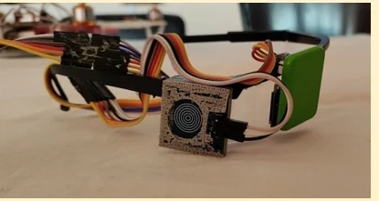
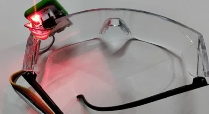
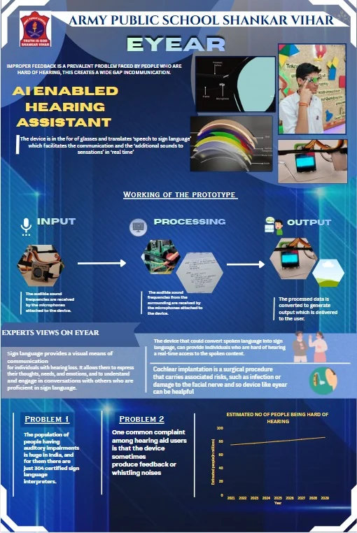
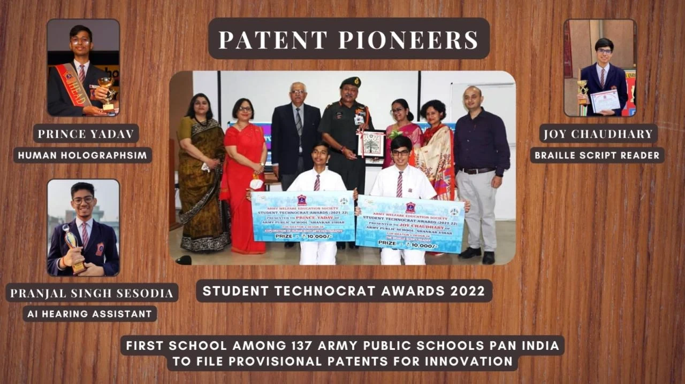

EYEAR: AI Hearing Assistant
Glasses for people who are hard of hearing. They translate speech into sign language and turn other sounds into sensations, in real time.
- Stack
- Python, Raspberry Pi, ESP32
- Patent
- Indian provisional patent, 2022
- Title
- Patent Pioneer, from my school
This page is a piano roll. Its keys run down the left edge: click one, or click the paper to punch a note. Scrolling plays it.
The problem
People who are hard of hearing get little useful feedback from the sound around them, and that leaves a wide gap in communication. India has a large population with hearing loss and, when we built this, only 304 certified sign language interpreters. Hearing aids don’t close the gap either: a common complaint is feedback or whistling from the device.
The solution
EYEAR is a pair of glasses. Microphones on the frame pick up the sound around the wearer, the device processes it, and the result reaches the wearer as sign language for speech and as sensations for other sounds.




Tech stack
| Software | Python and related libraries |
| Hardware | Raspberry Pi, ESP32 |
Recognition
My school gave me the title of Patent Pioneer for EYEAR. The device has an Indian provisional patent, filed in 2022. IBM selected me to present it to the then Union Minister of Education, and it was a Smart India Hackathon Junior finalist in 2022.
